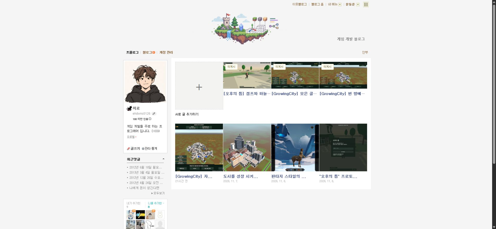
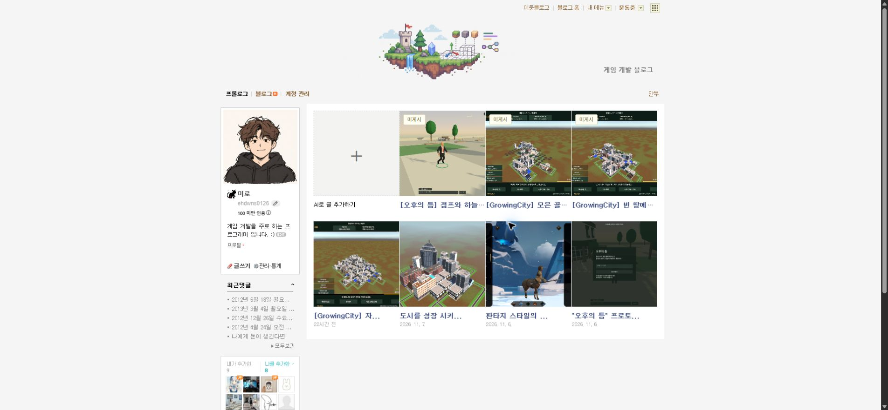

Tracefolio REPORTS & ISSUES
Tracefolio REPORTS & ISSUES로컬 원고 썸네일 크기 수정 후 실제 화면 확인
해결확장 새로고침 후 로컬3개와 기존4개가 모두185×185로 표시됨을 실제 Chrome에서 확인했습니다.
작업 결과
실제 Chrome에서 수정 적용을 확인했습니다.


변경 내용
재현 조건
Chrome 네이버블로그·블로그 매니저 확장0.7.0
재현 순서
가로1920×1080 게임 이미지를 포함한 로컬 원고3개의 목록을 열고 기존 네이버 게시글과 대조합니다.
기대 동작
로컬 원고도 기존 네이버 썸네일과 같은185×185 크기와 중앙 잘림으로 표시됩니다.
실제 동작
실제 DOM측정에서 로컬3개185×104, 기존4개185×185를 확인했습니다.
원인
복제한 카드의 이미지URL만 원본 가로 이미지로 교체했고, 네이버 서버가 제공하는 정사각 썸네일의 크기를 로컬 이미지에 적용하지 않았습니다. 실제 DOM에style없음·원본비율표시를 확인했습니다.
적용 내용
원본 카드의 실제 이미지 너비·높이를 읽어 로컬 이미지에 적용하고 object-fit:cover·object-position:center를 설정했습니다. 이미지 원본 바이트는 수정하지 않았습니다. GitHub af0f9bd에 수정본을푸시하고 설치 앱 사본에도 복사했습니다.
검증
사용자가 새로고침 완료라고 알려주신 후 실제 네이버 목록을 다시 로드했습니다. 실측은 로컬3개185×185·중앙cover, 기존4개185×185입니다. 실측값
대화: 사용자 새로고침 완료 → 사용자 코드텍스트 첨부와 이건 뭐야 → AI 첨부확인·실제목록검사. 발언시각 미기록. 첨부는 초안목록·읽기·편집용 native-content.js 코드와줄번호66개이며 오류제목은없었습니다. 원본과전체문자열은일치하지않아완전동일파일이라고단정하지않았습니다. 복사한화면은미확인이고수동코드입력은불필요합니다.
남은 사항
현재 Chrome 적용 검증 완료. 이전 배포 설치파일 재포장은 미실행입니다. 전역교훈은 기존실측검증지침과중복되어변경없음. 기존사용자탭보존, 새탭·보조프로세스실행없음.
작업 시간
- 제안 시간: 최초수정2
4분. 이번첨부확인1030초. - 실제로 완료된 시간: 최초소스수정·푸시2026-11-08 18:34:54 KST. 사용자갱신확인후18:50:04 KST재개, 약25초내첨부확인·실화면치수대조완료. 공개보고갱신확인진행.
- XERJ: 미사용 — XERJ연결도구미제공. rg·실제DOM치수·소스DOM검사사용.